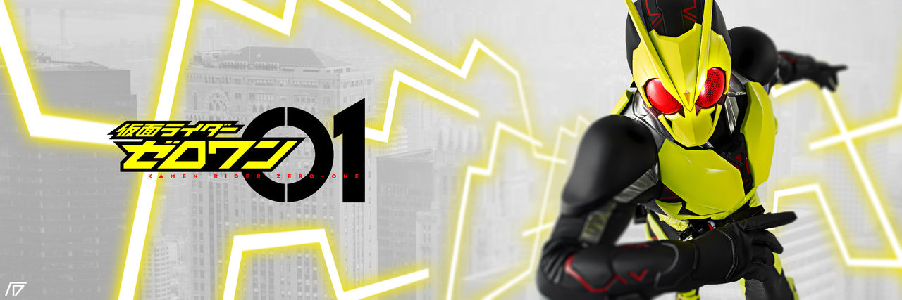

TỔNG QUAN

Kamen Rider Zero One
Kamen Rider Zero-One (仮 面 ラ イ ダ ー ゼ ロ ワ ン,Kamen Raidā Zerowan) là một bộ phim truyền hình nằm trong Kamen Rider Serie của Công ty Toei, Nhật Bản. Đây là bộ phim đầu tiên ra mắt trong thời kỳ Reiwa và tổng thể là bộ thứ 30. Bộ phim được công chiếu vào ngày 1 tháng 9 năm 2019 kết thúc vào ngày 30 tháng 8 năm 2020 với 45 tập lấy chủ đề AI (trí tuệ nhân tạo). Câu cửa miệng của bộ phim là: "Chỉ có một chủ tịch công ty mạnh nhất trên thế giới, đó là ta!!!"


TIN TỨC

POSTER